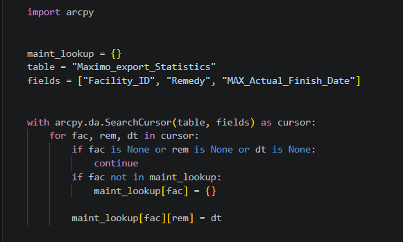

Asset Condition Updates
Background
The City of Minneapolis regularly evaluates storm and sewer infrastructure and assigns structural condition scores based on NASSCO's standardized PACP codes. For this project, I developed a script that automates the process for updating condition scores based on maintenance activity.
Methods
Process Maintenance Records
The script reads maintenance and inspection records and cleans field types.
Build Maintenance History
An ArcPy SearchCursor is used to create a nested dictionary containing information on the dates of maintenance activities for each stormwater and sewer asset.

Connect Maintenance to Asset Conditions
Association dictionaries define which maintenance activities resolve specific infrastructure issues. Existing condition records are then compared against the maintenance history and the dates of the corresponding activities.